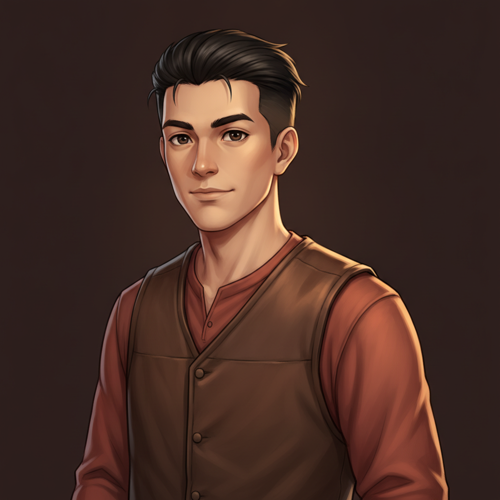
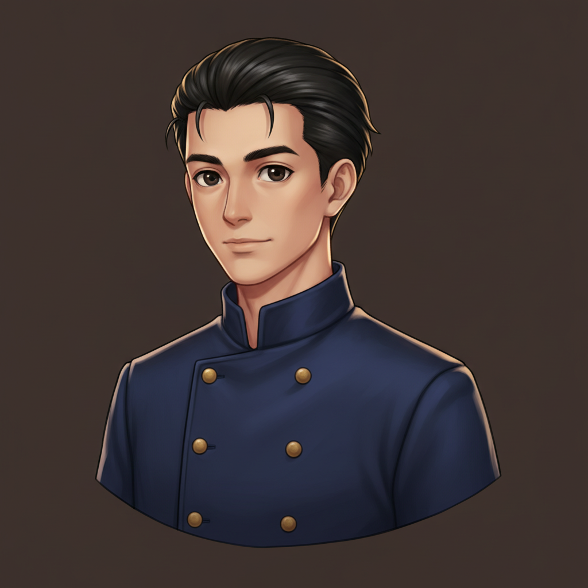
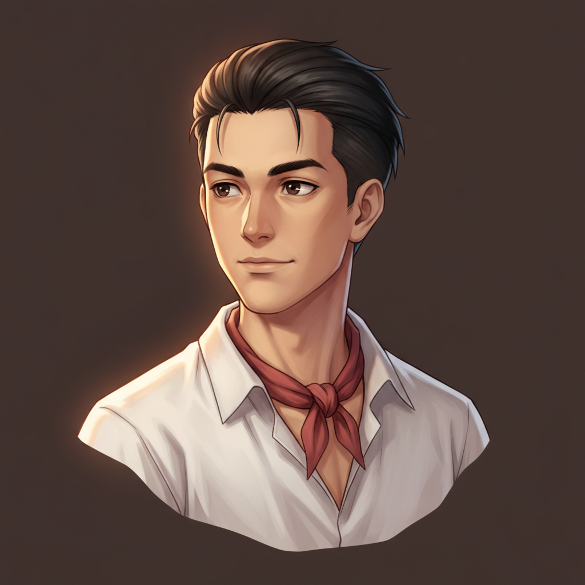
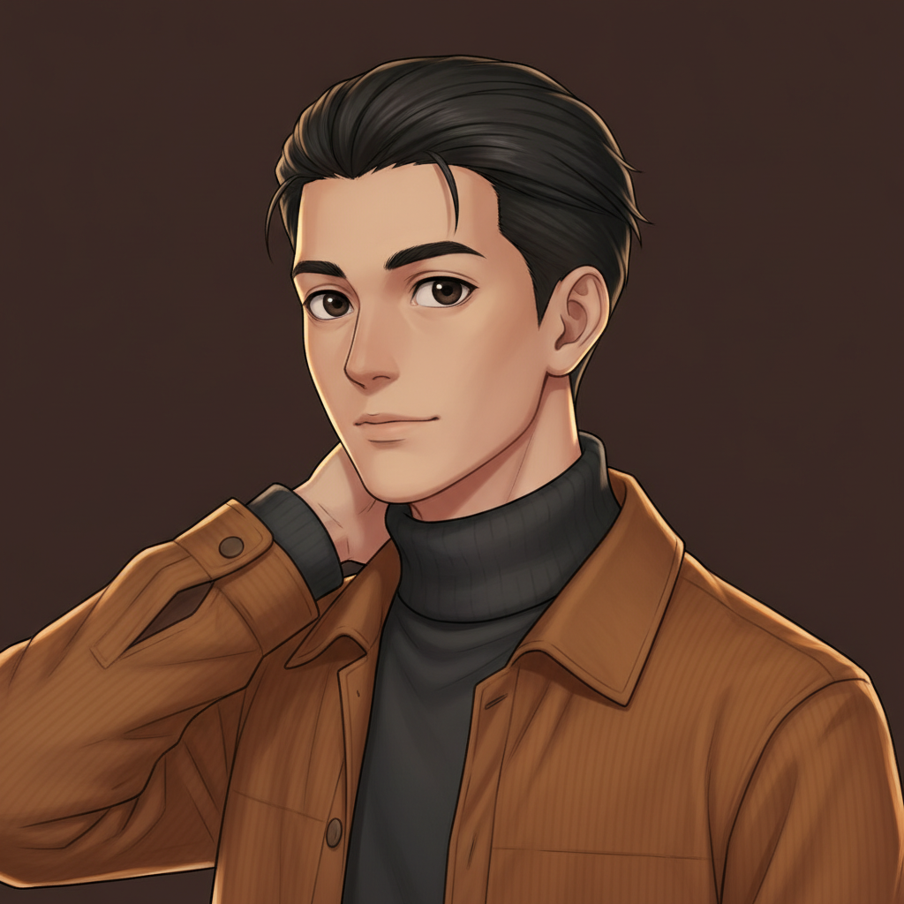
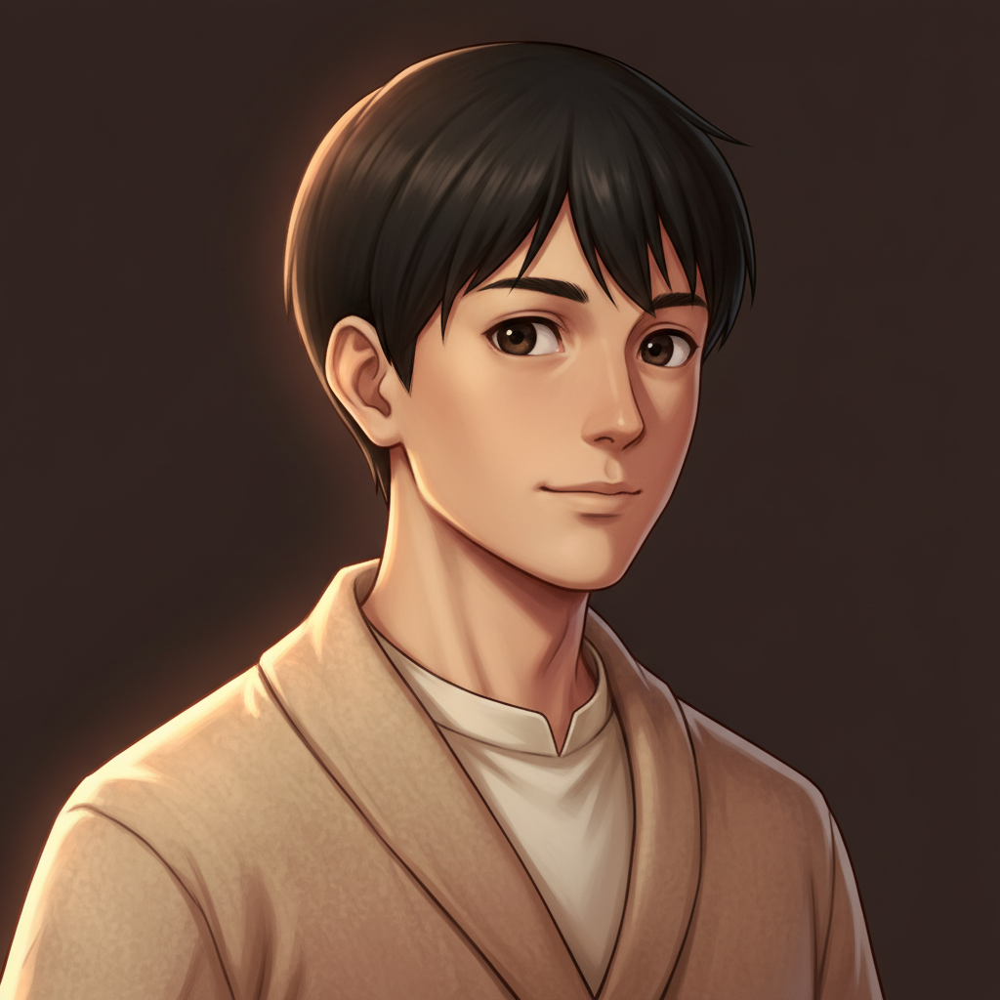
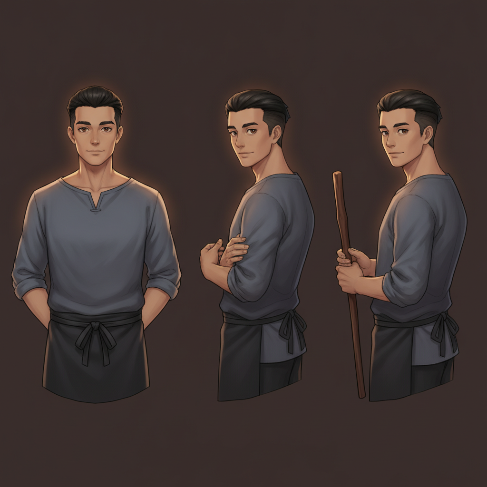

constants: black undercut, dark eyes, late twenties, neutral expression, no goggles, no gloves, no tool clutter.
F2 · leather work vest

waist-up, brown leather vest over rust-red sleeves — village craftsman energy.
F3 · the lamplighter's uniform

short double-breasted navy coat, small brass buttons, stand collar — says the JOB without any props.
F4 · shirt & neckerchief

head-and-shoulders angled, loose white shirt, faded-red neckerchief, gaze past the viewer.
F5 · turtleneck & corduroy

three-quarter with hand at the back of his neck — the pose instruction actually landed.
F1 · cardigan (face drifted)

cozy, but the hair lost the undercut and he reads years younger — off-model.
F6 · tunic & half-apron (format break)

came back as a 3-pose model sheet, not a bust — though note the third figure holds a lamplighter's pole, which is a nice accidental idea.